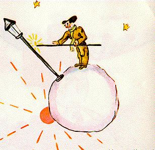

La cinquième planète était très curieuse. C'était la plus petite de toutes. Il y avait là juste assez de place pour loger un réverbère et un allumeur de réverbères. Le petit prince ne parvenait pas à s'expliquer à quoi pouvaient servir, quelque part dans le ciel, sur une planète sans maison, ni population, un réverbère et un allumeur de réverbères. Cependant il se dit en lui-même:
- Peut-être bien que cet homme est absurde. Cependant il est moins absurde que le roi, que le vaniteux, que le businessman et que le buveur. Au moins son travail a-t-il un sens. Quand il allume son réverbère, c'est comme s'il faisait naître une étoile de plus, ou une fleur. Quand il éteint son réverbère ça endort la fleur ou l'étoile. C'est une occupation très jolie. C'est véritablement utile puisque c'est joli.
Lorsqu'il aborda la planète il salua respectueusement l'allumeur: 
- Bonjour. Pourquoi viens-tu d'éteindre ton réverbère ?
- C'est la consigne, répondit l'allumeur. Bonjour.
- Qu'est-ce que la consigne ?
- C'est d'éteindre mon réverbère. Bonsoir.
Et il le ralluma.
- Mais pourquoi viens-tu de le rallumer ?
- C'est la consigne, répondit l'allumeur.
- Je ne comprends pas, dit le petit prince.
- Il n'y a rien à comprendre, dit l'allumeur. La consigne c'est la consigne. Bonjour.
Et il éteignit son réverbère.
Puis il s'épongea le front avec un mouchoir à carreaux rouges.
- Je fais là un métier terrible. C'était raisonnable autrefois. J'éteignais le matin et j'allumais le soir. J'avais le reste du jour pour me reposer, et le reste de la nuit pour dormir...
- Et, depuis cette époque, la consigne a changé ?
- La consigne n'a pas changé, dit l'allumeur. C'est bien là le drame ! La planète d'année en année a tourné de plus en plus vite, et la consigne n'a pas changé !
- Alors? dit le petit prince.
- Alors maintenant qu'elle fait un tour par minute, je n'ai plus une seconde de repos. J'allume et j'éteins une fois par minute !
- Ça c'est drôle ! Les jours chez toi durent une minute !
- Ce n'est pas drôle du tout, dit l'allumeur. Ça fait déjà un mois que nous parlons ensemble.
- Un mois ?
- Oui. Trente minutes. Trente jours ! Bonsoir.
Et il ralluma son réverbère.
Le petit prince le regarda et il aima cet allumeur qui était tellement fidèle à la consigne. Il se souvint des couchers de soleil que lui-même allait autrefois chercher, en tirant sa chaise. Il voulut aider son ami:
- Tu sais... je connais un moyen de te reposer quand tu voudras...
- Je veux toujours, dit l'allumeur.
Car on peut être, à la fois, fidèle et paresseux.
Le petit prince poursuivit:
- Ta planète est tellement petite que tu en fais le tour en
trois enjambées. Tu n'as qu'à marcher assez lentement pour
rester toujours au soleil. Quand tu voudras te reposer tu marcheras...
et le jour durera aussi longtemps que tu voudras.
- Ça ne m'avance pas à grand'chose, dit l'allumeur. Ce que j'aime dans la vie, c'est dormir.
- Ce n'est pas de chance, dit le petit prince.
- Ce n'est pas de chance, dit l'allumeur. Bonjour.
Et il éteignit son réverbère.
Celui-là, se dit le petit prince, tandis qu'il poursuivait plus loin son voyage, celui-là serait méprisé par tous les autres, par le roi, par le vaniteux, par le buveur, par le businessman. Cependant c'est le seul qui ne me paraisse pas ridicule. C'est, peut-être, parce qu'il s'occupe d'autre chose que de soi-même.
Il eut un soupir de regret et se dit encore:
- Celui-là est le seul dont j'eusse pu faire mon ami. Mais sa
planète est vraiment trop petite. Il n'y a pas de place pour deux...
Ce que le petit prince n'osait pas s'avouer, c'est qu'il regrettait cette planète bénie à cause, surtout, des mille quatre cent quarante couchers de soleil par vingt-quatre heures !
| Chapitre XIII | |
Capítulo XIII |
| Index | Capítulo XIV | |
| Chapitre XV | Capítulo XV |